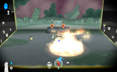
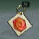
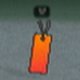
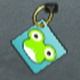
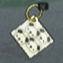
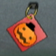
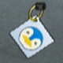

Om de edelstenen te beschermen moet je naast je gebruikelijke beren ook voorwerpen en speciale beereenheden inzetten.
Voorwerpen en speciale eenheden verkrijgen
Je krijgt een voorwerp of een speciale eenheid uit het boek door er een beer naar toe te gooien. De beer pakt het gewenste voorwerp dan automatisch op.
Voorwerpen en speciale eenheden gebruiken
De voorwerpen en speciale eenheden die je hebt verzameld verschijnen aan de rechterkant van het beericoontje onderaan het scherm. Selecteer het voorwerp of de eenheid die wilt gebruiken door naar links of rechts op de richtingsknop te drukken. Gooi voorwerpen of speciale eenheden op dezelfde manier als de beren naar het boek. Kies een richting, houd de A-knop of B-knop ingedrukt en zwaai de Wii-afstandsbediening naar boven.
 |
|
 |
|
Voorwerpen en speciale eenheden |
|
 |
|
 |

Toverspreuken: er zijn verschillende soorten elementspreuken als vuur, water en ijs en toverspreuken die explosies creëren. Vuurspreuken kun je gebruiken om dingen in het gebied mee te verbranden of om bommen mee te ontsteken. Waterspreuken vertragen beerschurken en doven vuurgebaseerde vijanden, en ijsspreuken bevriezen alles in een gebied. De explosieve spreuken zet je in als je blokken wilt vernietigen of verplaatsen.
Toverkunst is heel handig, maar kijk uit: beren die zich in de buurt bevinden leiden ook onder de gevolgen van een toverspreuk. Ten slotte kun je krachtballen gebruiken om de kracht van alle vriendelijke beereenheden te versterken binnen het effectgebied van de spreuk.

Boekenleggers: de drie boekenleggers bestaan uit Blazing (vuur), Torrential (vloed) en Glacial (ijs). Deze boekenleggers kunnen de hele pagina verbranden, overspoelen of bevriezen.

Kikkers: kikkers spugen water naar vijanden.

Bitberen: ze zijn misschien niet zo sterk als de standaardberen, maar qua aantal zorgen voor een overweldigende macht.

Pompoenlampjes: deze lampen zetten vijanden die zich in de buurt bevinden in brand. Ook kun ze bommen ontsteken.

Pinguïns: pinguïns kunnen vijanden die zich in de buurt bevinden bevriezen.